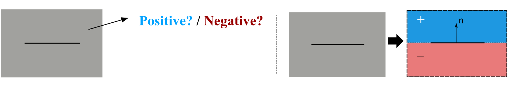

3PSDF: Three-Pole Signed Distance Function for Learning Surfaces with Arbitrary Topologies
IEEE/CVF Computer Vision and Pattern Recognition Conference (CVPR) 2022
| Weikai Chen | Cheng Lin | Weiyang Li | Bo Yang |

Figure 1. We show three groups of shape reconstruction results generated by NDF (in cyan) and our proposed 3PSDF (in gold) respectively. Our method is able to faithfully reconstruct high-fidelity, intricate geometric details including both the closed and open surfaces, while NDF suffers from the meshing problems. Each NDF result is reconstructed from a dense point cloud containing 1 million points while ours are reconstructed using an equivalent resolution.
Abstract
Recent advances in learning 3D shapes using neural implicit functions have achieved impressive results by breaking the previous barrier of resolution and diversity for varying topologies. However, most of such approaches are limited to closed surfaces as they require the space to be divided into inside and outside. More recent works based on unsigned distance function have been proposed to handle complex geometry containing both the open and closed surfaces. Nonetheless, as their direct outputs are point clouds, robustly obtaining high-quality meshing results from discrete points remains an open question. We present a novel learnable implicit representation, called the three-pole signed distance function (3PSDF), that can represent non-watertight 3D shapes with arbitrary topologies while supporting easy field-to-mesh conversion using the classic Marching Cubes algorithm. The key to our method is the introduction of a new sign, the NULL sign, in addition to the conventional in and out labels. The existence of the null sign could stop the formation of a closed isosurface derived from the bisector of the in/out regions. Further, we propose a dedicated learning framework to effectively learn 3PSDF without worrying about the vanishing gradient due to the null labels. Experimental results show that our approach outperforms the previous state-of-the-art methods in a wide range of benchmarks both quantitatively and qualitatively.Insight & Method
Challenge 1: "Curse" of Closeness of Traditional Two-sided Signed Distance Field (SDF)

Figure 2. (a) Conventional signed distance function represent the surface as the boundary between the positive and negative signs. (b) This leads to the "curse" of closeness, that is, the closed surface will always be generated once there exist both signs in the space (even that there is only one point has an opposite sign as shown above).
Solution: Introduce the Third (direction-less) Sign -- the NULL Sign

Figure 3. Left: To convert the traditional SDF into mesh, we using marching cubes algorithm to interpolate the surface position as the the zero-level set between the positive and negative values. Right: We propose to introduce the third pole, the NULL sign, into SDF. The NULL sign is represented by the nan value, which could disable the interpolation process. Hence, no surface could be extracted from a local cell where there exists any nan value at the cell corners.
As shown in Figure 3, 3PSDF can effectively lift the "curse" of closeness by introducing the third direction-less sign -- the NULL sign (represented by the nan value). Hence, by properly distributing the null signs over the space, we can obtain surface of arbitrary topologies, including both the closed and open ones. Typically, an open surface can be formed with 1) a narrow band surrounding the surface of interest that contains both the positive and negative signs and 2) the majority of space that is filled with nan values.
Challenge 2: Definition of Inside/Outside for Open Surface

Figure 2. (a) Conventional signed distance function represent the surface as the boundary between the positive and negative signs. (b) This leads to the "curse" of closeness, that is, the closed surface will always be generated once there exist both signs in the space (even that there is only one point has an opposite sign as shown above).
Solution: Sign Computation based on Surface Normals
Figure 3. Left: To convert the traditional SDF into mesh, we using marching cubes algorithm to interpolate the surface position as the the zero-level set between the positive and negative values. Right: We propose to introduce the third pole, the NULL sign, into SDF. The NULL sign is represented by the nan value, which could disable the interpolation process. Hence, no surface could be extracted in a local region where any nan value exists.
As shown in Figure 3, 3PSDF can effectively lift the "curse" of closeness by introducing the third direction-less sign -- the NULL sign (represented by the nan value). Hence, by properly distributing the null signs over the space, we can obtain surface of arbitrary topologies, including both the closed and open ones. Typically, an open surface can be formed with 1) a narrow band surrounding the surface of interest that contains both the positive and negative signs and 2) the majority of space that is filled with nan values.
Download
| Paper 33.3 MB |
Paper 33.3 MB |
Bibtex
@article{chen_2022_3psdf,
title={3PSDF: Three-Pole Signed Distance Function for Learning Surfaces with Arbitrary Topologies},
author={Chen, Weikai and Lin, Cheng and Li, Weiyang and Yang, Bo},
booktitle={Proceedings of the IEEE/CVF Conference on Computer Vision and Pattern Recognition},
pages={3269--3278},
year={2022}
}